Round Icons
Graphic Design
Снимки и фотография
В тази категория сме заложили изцяло на уменията да снимаш и да редактираш фотосите си. И тъй като вярваме, че смартфонът измества все повече фотоапаратите в ежедневната фотография, а и е много по-лесно споделянето в социалните мрежи, ви предлагаме приложения с много филтри и възможности за редакция.
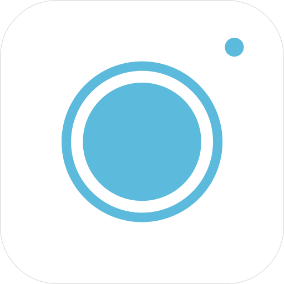aillis (Android, iOS, Windows)
От LINE Corporation / Application Center
Смартфон камера приложението "aillis" (преди известно като LINE) ви дава всичко, което трябва за редактиране на снимки. Независимо дали правите селфита или професионални фотографии, мощните инструменти за редактиране, включени в това приложение ви позволяват да разгърнете творческата си натура. Създавайте качествени колажи, добавяйте очарователни щрихи и направете много, много повече с aillis.
Цена: Безплатно(Предлага покупки в приложението)
Изтегли приложението от Google Play Store,App store ,Windows Store
Харесай Добави в любими
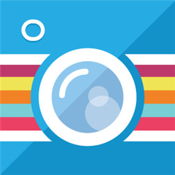
Beautiful Photo (Windows)
От Thumbmunkeys
С Beautiful Photo за Windows Phone ще направите снимките си още по-красиви. Един прост за използване интерфейс ви позволява да прилагате уникални филтри. Бъдете креативни с добавянето на рамки, драскулки и текст към снимките. Приложението има огромно разнообразие от възможности за споделяне. Покажете вашите творения на света чрез Facebook, Twitter, Tumblr или Flickr.
Цена: Безплатно
Изтегли приложението от Windows Store
Харесай Добави в любими
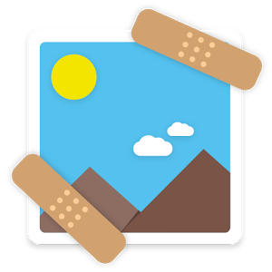
Gallery Doctor - Phone Cleaner (Android)
От Flayvr Media
Gallery Doctor е най-бързо развиващият се инструмент за почистване на снимки от вашата галерия. Приложението автоматично идентифицира нежеланите снимки, които заемат ценно място за съхранение, и ги премахва. Какво може да направи Gallery Doctor за вас? Той може да освободи до 35% от паметта ви за съхранение във вашето устройство, като автоматично открива и почиства „лошите“ и еднакви снимки. Защо ви трябва Gallery Doctor? Потребителите имат средно 2 GB еднакви или зле фокусирани снимки, които отнемат ценно място за съхранение на техните устройства. Това означава, че те имат нужда от телефонно почистване и оптимизиране. Така, вместо да прекарвате часове в преглеждане на хиляди снимки, за да откриете и почистите нежеланите, Gallery Doctor ви спестява време, като ги идентифицира веднага. Това е идеалното приложение за тази цел.
Цена: Безплатно
Изтегли приложението от Google Play Store
Харесай Добави в любими
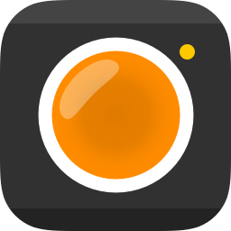
Hydra - Amazing Photography (iOS)
От Creaceed SPRL
Hydra предлага иновативна технология за фото заснемане и ви позволява да правите красиви снимки дори и в най-трудните условия на осветеност, което го прави чудесен спътник за iOS камера приложението. Hydra улавя повече светлина чрез сливане на 60 кадъра, за да направите една висококачествена снимка с по-малко шум, повече акценти / сенки с iPhone и IPAD. Hydra също така надхвърля ограничението от 12-мегапикселовия сензор, с до 32-мегапикселови изображения с висока резолюция. То използва най-новите възможности на iPhone и IPAD камера хардуера, както и най-новите камера APIs и GPU рендиране технологии на iOS 9.
Цена: 4,99 евро
Изтегли приложението от App Store
Харесай Добави в любими
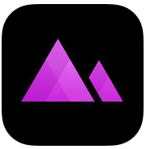
Darkroom – Photo Editor (iOS)
От Bergen Co.
Darkroom V2.0 е тук и приложението за фото редакция е по-лесно и по-бързо от всякога. С него ще направите вашите снимки перфектни. Редактирайте и споделяйте филтри с Pro Kit (вътрешна покупка).
Цена: Безплатно (Предлага покупки в приложението)
Изтегли приложението от App Store
Харесай Добави в любими
Rhonna Designs (iOS, Windows)
От Rhonna Farrer
Обичате ли да правите фото редакции? С Rhonna Designs имате всички инструменти в ръцете си, с които да се възвисите и вдъхновите. Проектирано от творци за творци! Добавяйте своята собствена индивидуалност във вашите снимки. Регулирайте прозрачността, цветовете, размера... добавяйте маски и се снимайте с помощта на различните профилни дизайни.
Цена: 3.79 лв.
Изтегли приложението от App Store, Windows Store
Харесай Добави в любими
Pano (Android, iOS, Windows)
Pano е познато приложение, което ви позволява да правите красиви панорамни снимки директно от телефона си, без нужда от друг софтуер. Сега Pano вече е достъпен и за Windows Phone потребителите.
Изтегли приложението от App Store, Google Play Store, Windows Store
Харесай Добави в любими
Fused : Double Exposure, Video and Photo Blender (iOS, Windows)
От EasyTigerApps
Правете двойна експозиция лесно с FUSED - първото приложение за Windows Phone, което ви позволява да сливате видео, снимки или да правите комбинация от двете. С FUSED можете да създадете красиви визуализации. Създайте своите FUSED творения в 4 лесни стъпки: • Импортирайте фон и преден план. • Прелистете за визуализация и изберете най-добрия режим на смесване на вашия проект. • Направете настройка на цветовете на всеки слой и маскирайте, ако искате. • Експортирайте получения резултат, като го споделите с всички в социалните мрежи.
Цена: Безплатно (Предлага покупки в приложението)
Изтегли приложението от App Store,, Windows Store
Харесай Добави в любими
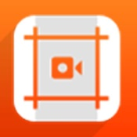
CropiPic - crop video & image (Windows)
От Mixilab
Изрежете видеоклип или снимка, сложете цвят, шаблон или размазване на фона. Завъртете във вертикална ориентация, смесвайте звука и още с CropiPic – един страхотен инструмент за подготовка на видео или снимка за Instagram, Whatsapp, Facebook, YouTube и т.н.
Цена: Безплатно (Предлага покупки в приложението)
Изтегли приложението от Windows Store
Харесай Добави в любими
Twenty20 - Sell Your Photos & Build Your Audience (iOS)
От Fast Labs Inc.
Twenty20 е най-добрият начин да започнете да печелите пари от мобилната си фотография. Преминете към следващото ниво и правете пари, продавайки вашите снимки на марки, агенции и дизайнери. Присъединете се към богата общност от цял свят, в която мобилната фотография е източник на свежи пари. Ще печелите пари от всяка закупена снимка. Ще се радвате и на неограничено качване на снимки в Twenty20. В приложението няма скрити покупки и то е напълно безплатно за използване.
Цена: Безплатно
Изтегли приложението от App Store
Харесай Добави в любими
ONE Галерия (Android)
От HTC Research
ONE галерия е услуга, която свързва вашия телефон към снимки и видеа във вашето хранилище в облака. Основната цел е да ви помогне лесно да виждате любимите си спомени, които сте записали на различни места онлайн. След инсталиране на ONE галерия ще можете да използвате HTC галерия, за да се свържете с акаунти във Facebook, Dropbox, Flickr и Google Drive. Вашите снимки и видеа от всеки свързан акаунт ще се появяват под формата на миниатюра, която заема малко място в Галерия. Можете да изтеглите снимка в пълен размер или видео по всяко време. Използването на тази функция не качва вашето локално съдържание в онлайн акаунтите ви.
Цена: Безплатно
Изтегли приложението от Google Play Store
Харесай Добави в любими
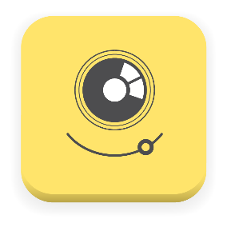
PicTapGo (iOS)
От Totally Rad! Inc.
PicTapGo е просто фотографско приложения за вашия iPhone и iPAD, което ви позволява да изразите своята креативност и уникален стил. PicTapGo включва над 70 фото ефекти и ви позволява да създадете филтри и да запишете вашите собствени потребителски филтър рецепти. PicTapGo включва филмови и винтидж филтри и отчетливи черно-бели и красиви цветни ефекти. Лесно споделяне на вашите снимки със семейството и приятелите в Instagram, Facebook и Twitter.
Цена: Безплатно (Предлага покупки в приложението)
Изтегли приложението от App Store
Харесай Добави в любими
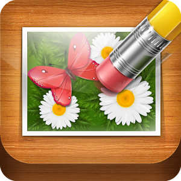
TouchRetouch (Android, iOS, Windows)
От ADVA Soft
TouchRetouch е всепризнат фоторедактор, който ви позволява да премахнете нежеланото съдържание или предмети от всяка снимка, използвайки само пръста си и вашия телефон. Маркирайте елементите, които искате да бъдат извадени от снимка, и натиснете "Старт". Това е всичко. Редактирането на снимките никога не е било толкова бързо, лесно и удобно.
Цена: $0,99
Изтегли приложението от App Store
, Google Play Store, Windows StoreХаресай Добави в любими
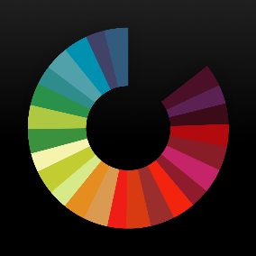
Fotograf (iOS)
От Nevercenter Ltd. Co.
Fotograf е първото приложение за редактиране на снимки, което донася истинска дълбочина в тях за iPhone и iPAD. Има причина, снимките просто изглеждат по-добре с Fotograf. Вложено е маниакално инженерство открай докрай за достигане на най-високите стандарти за точност на цветовете. От техническа гледна точка това означава, че се използват неразрушителни цветови изчисления с 96 bpp (bits-per-pixel) на всяка крачка и се избягват допълнителните етапи на компресиране, които се намират в толкова много други фото приложения. Всичко казано дотук означава по-плавни градации на цветовете, по-дълбоки тонови диапазони и по-отчетливи детайли, без значение колко преизчисления или филтри тествате. „Това е само началото“, казват създателите на Fotograf.
Цена: 1,99 долара (Предлага покупки в приложението)
Изтегли приложението от App Store
Харесай Добави в любими
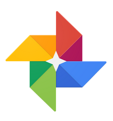
Фото (Android, iOS)
От Google Inc
Google Фото е домът на всичките ви снимки и видеоклипове, които могат да се търсят и които са организирани по хора, места и важни неща. Характеристики: ВИЗУАЛНО ТЪРСЕНЕ: Снимките ви вече могат да се търсят по хората, местата и нещата в тях. Търсите сандвича с риба, който ядохте през почивката си на Хавайските острови? Трябва само да въведете „Hawaii“ и „food“, за да намерите снимката с храна дори ако няма описание. Забележка: Групирането на лица не е налично във всички държави. АВТОМАТИЧНО СЪЗДАВАНЕ НА РЕЗЕРВНО КОПИЕ: Дръжте всичките си снимки и видеоклипове на сигурно място и с възможност за достъп от всяко устройство. Изберете безплатно неограничено хранилище в облака, налично при високо качество, или съхранявайте безплатно до 15 GB в оригинален размер (хранилището е споделено за профила ви в Google). СПЕСТЯВАНЕ НА МЯСТО НА УСТРОЙСТВОТО ВИ: Google Фото може да ви помогне да изчистите от устройството си снимките и видеоклиповете, на които са създадени сигурни резервни копия, така че да няма нужда да се притеснявате при изтриването на снимки за освобождаване на пространство. ВДЪХВАНЕ НА ЖИВОТ НА СНИМКИТЕ ВИ: Автоматично създавайте филми с монтаж, интерактивни истории, колажи, анимации и др. РЕДАКТИРАНЕ: Променяйте снимките с едно докосване. Използвайте лесни и мощни инструменти за фото- и видеоредактиране, за да прилагате филтри, да коригирате цветовете и др. СПОДЕЛЯНЕ: Споделяйте стотици снимки мигновено чрез връзки за споделяне и използвайте за споделяне приложенията, които пожелаете.
Цена: Безплатно
Изтегли приложението от App Store, Google Play Store
Харесай Добави в любими
Ultralight / Photo Editor (iOS)
От Timi Koponen
Ultralight е бърз, забавен и интуитивен начин за редактиране на снимки. С 22 лесно адаптивни филтърни настройки Ultralight ще ви позволи бързо да нанесете желаните корекции върху вече направени снимки. Имате 6 различни инструмента за редактиране на снимките: - Корекция на тона - Наситеност и температура - Оцветяване - Винетиране и избистряне - Текстура (вътрешна покупка) - Изрязване Запазвайте снимките във вашата галерия или ги споделете директно в Instagram.
Цена: Безплатно
Изтегли приложението от App Store
Харесай Добави в любими
Hide Photos 2.0 (Windows)
От Mobile Communications
Hide Photos е лично шкафче за снимките във вашия Windows Phone. С това приложение ще можете да поддържате всички ваши лични снимки скрити и защитени зад множество слоеве сигурност. Прегледайте вашата фотогалерия и изберете снимките, които искате да бъдат защитени. Качете ги в Hide Photos и след това изтрийте изображенията в стандартната ви галерия – те ще останат видими само за вас. Вече няма да се притеснявате, че някой приятел или член на семейството ви ще види неподходящи за чужди очи снимки.
Цена: Безплатно
Изтегли приложението от Windows Phone Store
Харесай Добави в любими
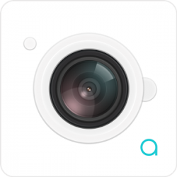
aimera - love me more (Android)
От JP Brothers, Inc.
Правете снимки на моментите, които обичате, и селфита с хората, които обичате. Aimera е филтър камера, която ще ви помогне да правите по-добри снимки, избирайки от 140+ филтъра, визуализиращи се в реално време. Наличен е тих режим на работа, с който няма да притеснявате околните, ако сте на обществено място. Можете да споделяте заснетото в социалните мрежи или с приятелите си.
Цена: Безплатно
Изтегли приложението от Google Play Store
Харесай Добави в любими
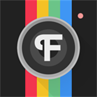
Font Candy - Typography Photo Edito (iOS, Windows)
От EasyTigerApps
Font Candy ще ви помогне да коригирате вашите снимки, като ви позволи да добавяте надписи. Нека вашата креативност проличи с Font Candy. Как да използвате Font Candy:
- Направете снимка или качете от вашата галерия
- Двоен начин за редактиране на текст
- Регулирайте стила на текста с шрифтове, сянка, подравняване, слоеве и др.
- Изберете цвят или качете друга снимка за запълване на текста
- Добавяйте множество надписи и манипулирайте всеки един поотделно, за да направите своята снимка наистина уникална
Цена: Безплатно (Предлага покупки в приложението)
Изтегли приложението от App Store
, Windows StoreХаресай Добави в любими
PanoPerfect (iOS)
От HalfPeeled LLC
PanoPerfect е забавно, безплатно и лесно за използване приложение за панорамни снимки. Когато правим панорами, ние искаме да ги споделим с всички, но по такъв начин, че да изглеждат добре. PanoPerfect е една своеобразна социална мрежа за панорамни снимки. Споделяйте красиви панорамни снимки от вашия iPhone. Открийте, следвайте и споделяйте прекрасните панорамни снимки. Вижте невероятни снимки от цял свят чрез раздела Explore. Създайте и персонализирайте свой собствен профил. Получавайте известия, когато други хора коментират, харесат и последват ваши панорамни изображения.
Цена: Безплатно
Изтегли приложението от App Store
Харесай Добави в любими
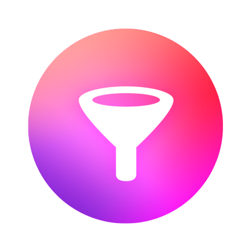
Filters for iPhone (iOS)
От tap tap tap
С Filters за iPhone няма да правите снимки, на които да добавяте филтри. Вие ще трансформирате снимките. Filters ще ви даде над 800 начина да трансформирате вашите фотографии, включително: напълно регулируеми автентични филмови възстановки, ръчно рисувани текстури, ярки цветни наслагвания, специални мултиефектни корекции, както и стандартни инструменти за настройка на изображението, като яркост, контраст, цвят температурата, експозиция и още. Преди няколко дни Filters for iPhone бе придобито от друго много популярно приложение, Camera+.
Цена: $0,99
Изтегли приложението от App Store
Харесай Добави в любими
Phonto - Text on Photos (iOS)
От youthhr
Phonto е просто и интуитивно приложение, което ви позволява да поставяте текст върху снимки. Можете да изберете между 400 шрифта или да инсталирате нов. Променяйте големината, цвета, сенките, наклона и още много, много други неща, свързани с текст.
Цена: Безплатно (Предлага покупки в приложението)
Изтегли приложението от Google Play Store
Харесай Добави в любими
Retype - Typography Photo Editor (iOS)
От Sumoing Ltd
Retype е приложение за хора, обичащи типографията, и то е всичко, което сте искали, за да добавяте уникални стилове текст към вашите снимки. Retype е единственият инструмент с 3D, сянка и многоцветен слой шрифтове. То може да се похвали с енджин, позволяващ интелигентно оформление, с който ще добавяте безброй шрифтове и художествени комбинации с едно докосване. Retype разполага с изчистен и лесен за използване интерфейс и все по-нарастващата колекция от цитати и фонови снимки. Можете, разбира се, да използвате някои от вашите собствени снимки. Включен е голям брой филтри, за да завършите своя дизайн.
Цена: 2,99 евро
Изтегли приложението от App Store
Харесай Добави в любими
Blendifier (Windows)
От borneo mobile
Дайте воля на твореца във вас. Направете забележителни снимки. Смесете две снимки заедно, за да създадете красив ефект с двойна експозиция. Клонирайте вашата снимка и я смесете с друга снимка. Нанесете различни филтри, регулирайте стила и оставете своя отпечатък.
Цена: Безплатно
Изтегли приложението от Windows Store
Харесай Добави в любими
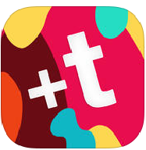
Fontmania - Add Captions and Quotes to Your Photo (iOS)
От Apalon Apps
Нека вашите снимки говорят! Добавете текст към снимка и я превърнете в една вдъхновяваща картина, поздрав или любовна картичка. Редактирайте, запишете или я изпратете на любим човек само с няколко докосвания. Старателно са подбрани уникални шрифтове и цветове, така че да можете лесно да осъществите всяка ваша идея. Fontmania е прост и бърз начин за редакция на снимки: Изберете от съществуващите ви снимки или направете нова. Добавете текст: изберете най-добрия шрифт и цвят. Запаметете снимката и/или я споделете чрез Instagram, Facebook, Pinterest или всяка друга социална мрежа.
Цена: 1,99 долара
Изтегли приложението от App Store
Харесай Добави в любими
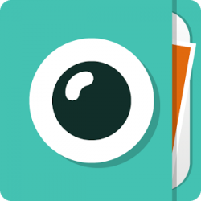
Cymera - Photo Editor, Collage (Android)
От SK Communications
Над 150 милиона потребители използват услугите на Cymera. Това е един от най-добрите начини да редактирате вашите селфита. Не е необходим ретуш. С живите филтри и безшумен режим ще направите най-доброто селфи, за да изразите своята индивидуалност. Използвайте множеството функции за редактиране - колажи, стикери, ретуш и др. Създаването на уникални и забавни снимки никога не е било толкова лесно. Споделете вашите красиви снимки, създадени от Cymera, с приятелите си.
Цена: Безплатно (Предлага покупки в приложението)
Изтегли приложението от Google Play Store
Харесай Добави в любими
- Последно обновени: Февруари 2016
- Категория: Приложения за снимки и фотография